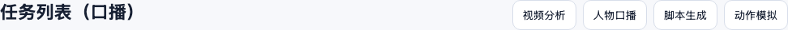
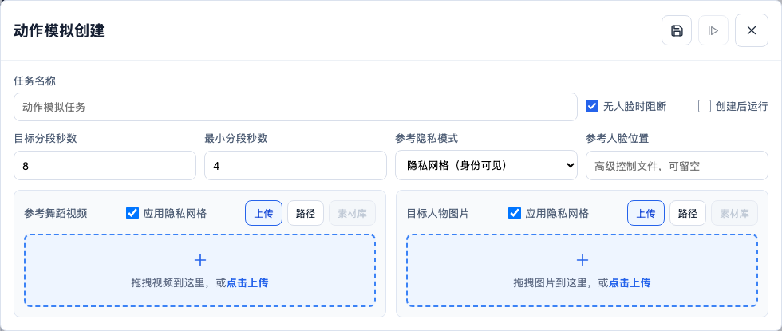
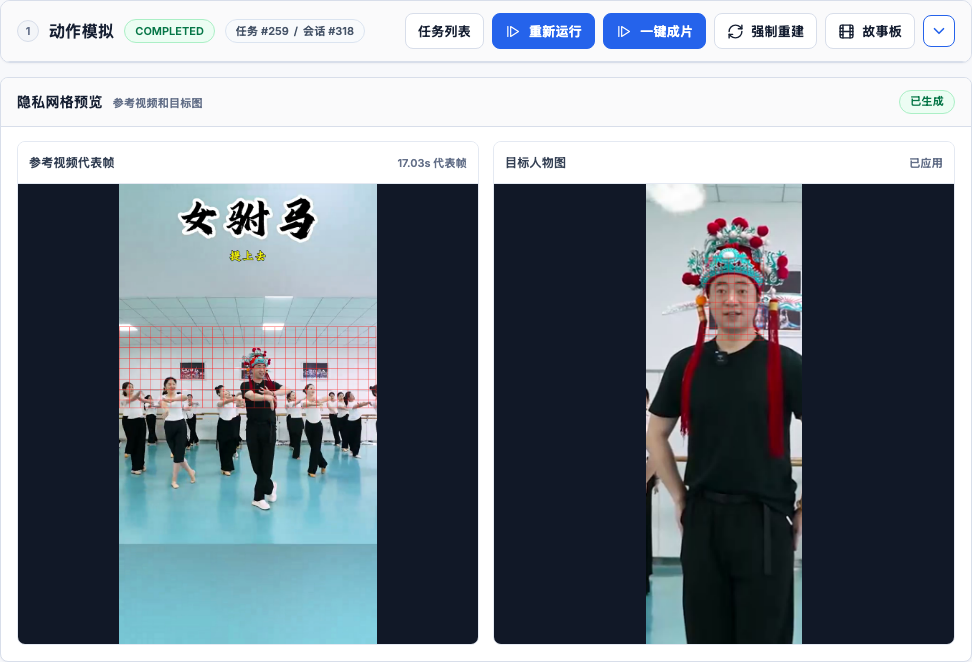

OpenCrew 隐私网格模式使用手册
隐私网格模式会在人脸活动范围上覆盖固定红色细线网格，并将处理后的参考视频和目标人物图发送给生成模型。任务运行后，页面会显示一张参考视频代表帧和目标人物图，供用户确认网格效果。
使用前确认
- 准备一个参考舞蹈视频，以及一张目标人物图片。
- 真人素材通常保持两个“应用隐私网格”复选框为勾选状态。
- 如果某个输入不是真人，或明确不希望添加网格，可取消对应输入区域的复选框。
- 保留“无人脸时阻断”可避免真人素材在未检测到人脸时继续提交。
隐私说明：界面名称明确标注“身份可见”。红色网格不是匿名化或身份去除方案，人物仍可能被识别；它用于按当前工作流提供固定视觉引导。
1打开动作模拟创建弹窗
进入“任务列表（口播）”，点击页面右上方的“动作模拟”。

2选择隐私网格和应用范围
- 在“参考隐私模式”中选择“隐私网格（身份可见）”。
- 参考舞蹈视频和目标人物图片区域会分别出现“应用隐私网格”。两个选项默认勾选。
- 上传素材，或在编辑已有任务时通过“路径”“素材库”选择素材。
- 按素材情况设置目标分段秒数和最小分段秒数。

取消某一个复选框时，只有该输入不添加网格。两个复选框都取消时，界面会提示两个输入都将按原始视觉发送给模型。
3保存或创建并运行
- 点击标题栏的保存图标，只创建任务。
- 点击标题栏的播放图标，创建任务并立即运行。
- 也可以勾选“创建后运行”，再保存任务。
运行时，步骤 02 会检测参考视频中的人脸活动范围，生成固定网格视频、参考代表帧，并按所选范围处理目标人物图。多段任务使用上一段尾帧续接时，系统会对尾帧重新检测人脸并添加网格，再将其作为下一段的新图和模型输入；上一段已经生成的视频不会被重新加网格。
4检查网格预览
步骤 02 完成后，任务页面顶部会显示“隐私网格预览”：
- 参考视频代表帧：显示从参考视频中选取的一张代表画面，不播放预览视频。
- 目标人物图：显示实际发送给模型的网格处理图。
- 已生成：两张所需预览均存在，并与当前配置一致。

确认网格覆盖区域符合预期后，可继续进入故事板或点击“一键成片”。
状态与处理
| 页面状态 | 含义 | 处理方式 |
|---|---|---|
| 等待生成 | 步骤 02 尚未完成，或旧任务没有预览文件。 | 等待运行结束；旧任务需要重新运行。 |
| 需重新生成 | 隐私模式或应用范围在产物生成后发生变化。 | 点击“重新运行”或“强制重建”。 |
| 生成失败 | 步骤 02 被阻断或处理失败。 | 查看运行弹窗中的具体错误；真人素材可检查人脸是否清晰。 |
| 未应用隐私网格 | 对应输入的复选框已取消。 | 这是预期状态；需要网格时重新勾选并运行。 |
UI 验证记录
| 创建弹窗 | 通过：隐私模式可选择，两个复选框默认勾选。 |
|---|---|
| 桌面预览 | 通过：两张图片完成解码，无控制台错误，无横向溢出。 |
| 移动布局 | 通过：两张预览按单列排列，可滚动查看。 |
| 预览访问 | 通过：使用任务范围内的受保护接口，不暴露任意文件路径。 |